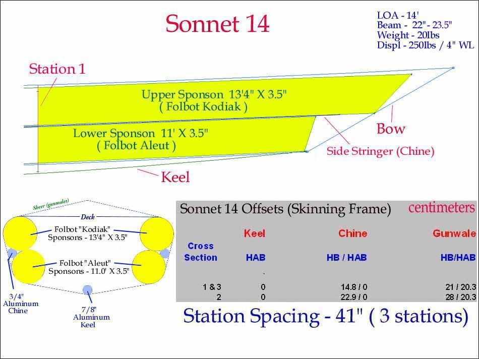

| Sonnet 14 Offsets ( page 5 of 6) | Menu Previous Page Next Page |
|

Sections / Stations 1 and 3 offsets are identical. Station 2 represents the boats maximum beam. On the Sonnet inflatables, stations are used for the skinning frame, but are not part of the completed boat. The Sonnet 16 and Sonnet 18 have been modified to use different size top ( 15') and bottom (13.5') sponsons similar to the setup seen on the Sonnet 14 drawing above.
|
|